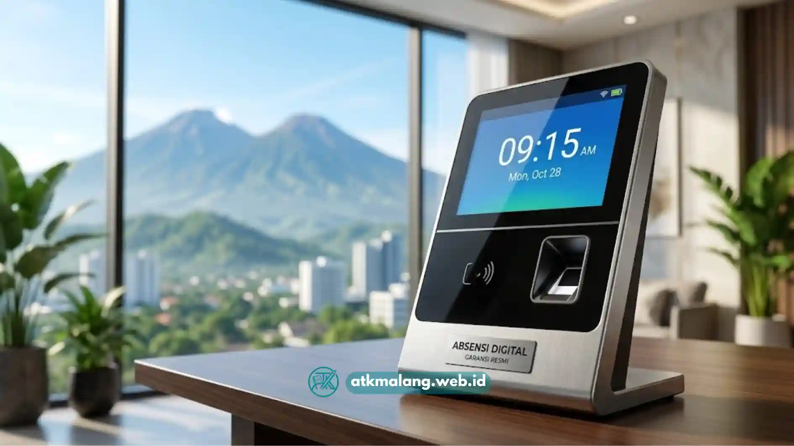

Bagi pemilik usaha di Malang yang mencari perangkat presensi dengan harga terjangkau namun tetap andal, mesin absen berlayar LCD menjadi salah satu opsi populer. Layar LCD pada mesin absensi memudahkan karyawan melihat status presensi secara langsung, sekaligus mempermudah HRD dalam pengaturan dan pemantauan perangkat.
- Mesin absen LCD menampilkan status presensi dan informasi waktu secara langsung di layar.
- Harga cenderung lebih terjangkau dibanding mesin absensi dengan layar sentuh besar atau kamera resolusi tinggi.
- Garansi resmi penting untuk memastikan perangkat dapat diperbaiki atau diganti jika bermasalah.
- Pilih penyedia lokal di Malang untuk memudahkan layanan instalasi dan purna jual.
- Perhatikan kapasitas pengguna dan metode verifikasi yang tersedia pada perangkat.
Daftar Isi
Apa Itu Mesin Absen LCD dan Apa Kelebihannya?
Mesin absen LCD adalah perangkat presensi yang dilengkapi layar kristal cair (Liquid Crystal Display) untuk menampilkan informasi seperti waktu, status absensi, atau pesan sistem kepada pengguna secara langsung setelah proses verifikasi dilakukan.
Kelebihan utama mesin absen berlayar LCD adalah kemudahan bagi karyawan untuk mengetahui apakah proses presensi mereka berhasil tanpa perlu bertanya ke HRD. Selain itu, harga perangkat ini umumnya lebih terjangkau dibanding mesin dengan layar sentuh berukuran besar atau kamera beresolusi tinggi.
Selain itu, layar LCD juga mempermudah proses pengaturan menu dan konfigurasi perangkat secara langsung di lokasi. Alat ini melengkapi kebutuhan Alat Tulis Kantor dan perlengkapan usaha Anda.
Berapa Kisaran Harga Mesin Absen LCD di Malang?
Harga mesin absen LCD dapat bervariasi tergantung metode verifikasi yang digunakan, kapasitas pengguna, merek, serta fitur tambahan seperti konektivitas jaringan atau kompatibilitas software payroll.
Secara umum, mesin absen LCD dengan verifikasi sidik jari cenderung berada pada kisaran harga yang lebih terjangkau dibanding mesin dengan verifikasi wajah, karena teknologi sensor sidik jari sudah lebih matang dan diproduksi secara massal.
Perbedaan harga juga dapat dipengaruhi oleh kapasitas penyimpanan data pengguna, semakin besar kapasitas yang didukung, umumnya semakin tinggi pula harga perangkat. Pembeli di Malang disarankan untuk membandingkan penawaran dari beberapa penyedia lokal, karena selain harga perangkat, biaya instalasi dan pengaturan awal juga dapat memengaruhi total biaya yang perlu dikeluarkan.

Mesin absen sidik jari dengan layar LCD yang mudah dioperasikan.Bagaimana Memastikan Mesin Absen yang Dibeli Bergaransi Resmi?
Untuk memastikan mesin absen LCD yang dibeli memiliki garansi resmi, pembeli perlu memeriksa dokumen garansi dari distributor atau penyedia, memastikan produk berasal dari jalur distribusi resmi, dan mengecek keberadaan layanan purna jual di wilayah Malang.
Pembeli sebaiknya menanyakan secara langsung kepada penjual mengenai masa berlaku garansi, cakupan garansi seperti komponen apa saja yang ditanggung, serta prosedur klaim apabila perangkat mengalami kerusakan.
Membeli dari penyedia resmi atau distributor terpercaya di Malang juga akan mempermudah proses klaim garansi dibanding membeli dari sumber yang tidak jelas asal-usulnya. Selain itu, penting untuk memeriksa apakah penyedia menyediakan layanan instalasi dan pelatihan penggunaan perangkat, karena hal ini turut menentukan kelancaran operasional mesin absensi setelah dipasang.
Apa Saja Fitur yang Perlu Diperhatikan pada Mesin Absen LCD Murah?
Fitur yang perlu diperhatikan pada mesin absen LCD dengan harga terjangkau meliputi kapasitas pengguna, metode verifikasi yang didukung, konektivitas untuk transfer data, serta ukuran dan kejelasan layar LCD itu sendiri.
Kapasitas pengguna menentukan berapa banyak data sidik jari atau kartu yang dapat disimpan dalam perangkat, sehingga perlu disesuaikan dengan jumlah karyawan saat ini maupun proyeksi pertumbuhan usaha. Metode verifikasi yang didukung, baik sidik jari, kartu, atau kombinasi keduanya, akan memengaruhi kemudahan penggunaan sehari-hari.
Konektivitas seperti USB, jaringan LAN, atau fitur ekspor data ke komputer turut memengaruhi kemudahan HRD dalam mengambil dan mengolah data kehadiran. Sementara itu, ukuran dan kejelasan layar LCD memengaruhi kenyamanan karyawan dalam membaca informasi yang ditampilkan, terutama pada kondisi pencahayaan ruangan yang kurang ideal.
Tips Memilih Penyedia Mesin Absen LCD di Malang
Pemilik usaha di Malang disarankan memilih penyedia yang memiliki toko fisik atau kontak yang jelas di wilayah setempat, sehingga proses instalasi, pelatihan, dan klaim garansi dapat dilakukan lebih mudah dibanding membeli dari penjual yang berlokasi jauh di luar kota.
Membandingkan beberapa penawaran dari penyedia berbeda juga disarankan agar pembeli mendapatkan gambaran yang lebih jelas mengenai kewajaran harga, cakupan garansi, dan kualitas layanan purna jual yang ditawarkan. Selain itu, memeriksa ulasan atau rekomendasi dari pengguna lain di sekitar Malang dapat membantu memastikan reputasi penyedia sebelum melakukan pembelian.
Mesin absen LCD menjadi pilihan yang cukup ekonomis bagi usaha di Malang yang membutuhkan sistem presensi sederhana namun tetap andal. Untuk memastikan perangkat yang dibeli bernilai baik dalam jangka panjang, lengkapi juga pengadaan Alat Tulis Kantor Anda dengan memperhatikan kejelasan garansi resmi, kesesuaian fitur dengan kebutuhan usaha, serta reputasi penyedia dalam memberikan layanan purna jual di wilayah setempat.